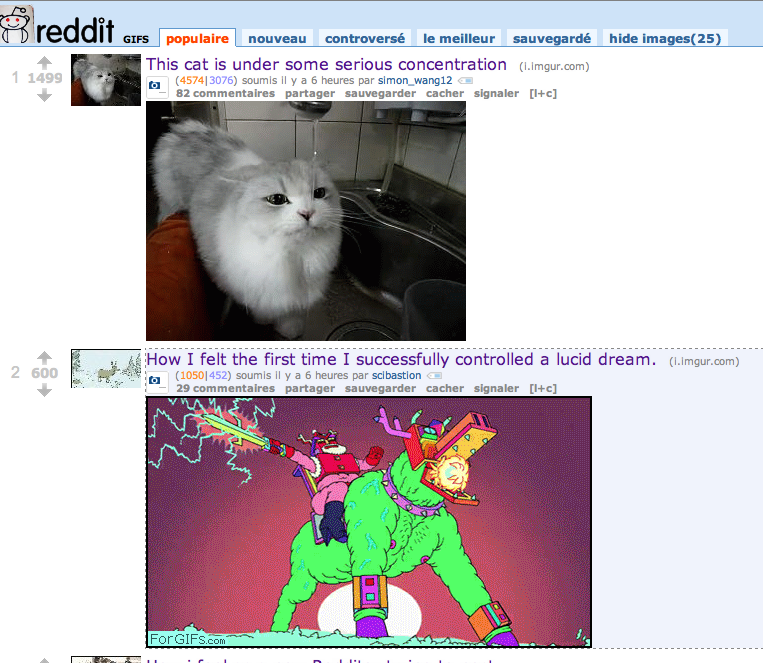
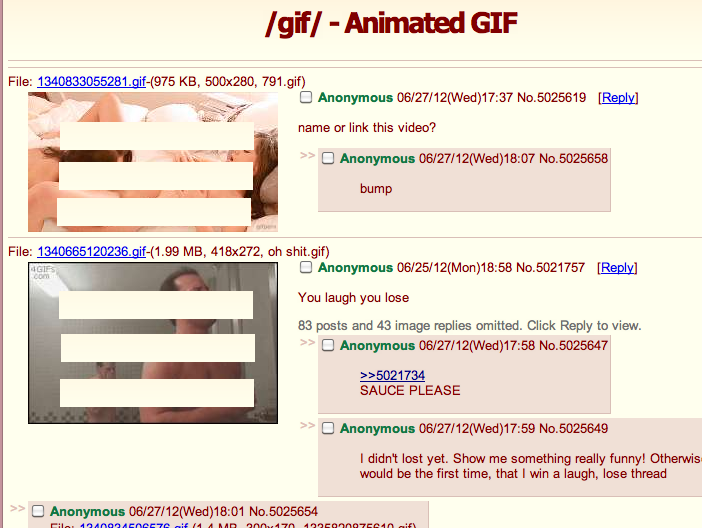
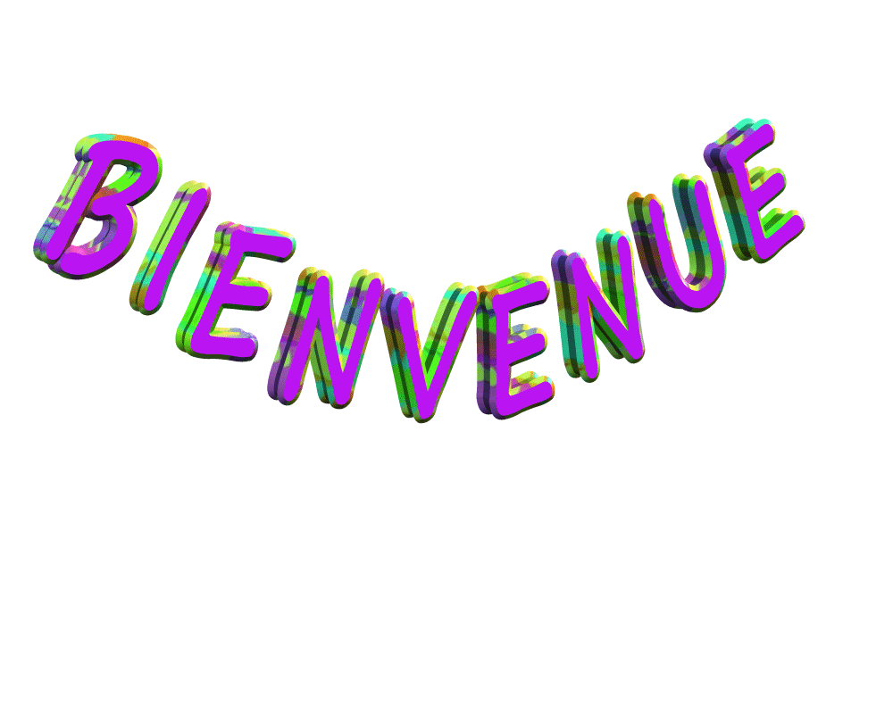
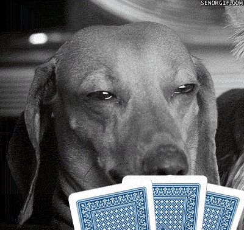

Le GIF
Un format qu'il est bien.

Présenté par Benjamin Clay & Damien Alexandre
Se prononce JIF
Et non pas guif

Ni JUIF
Média parfait entre la photo et la vidéo
Il ne lui manque que le son
Historique
- 1987 : Compuserve met au point le Graphics Interchange Format
- 1989 : Extension du format pour y mettre plusieurs images et donc créer des animations
- 1995 : Netscape 2 support le Gif Animé
- 2003 : Création de 4Chan
- 2006 : Expiration du dernier brevet, GIF est dans le domaine public !
- 2007 : Création de Tumblr
Le GIF comme moyen d'expression
La joie

La tristesse

Le WTF (code crado ?)

L'aberration

Où les trouver ?
Des sites spécialisés
- http://www.reactiongifs.com/
- http://forgifs.com/
- http://gifolas-cage.tumblr.com/
- http://www.jamesvandermemes.com/
- http://knowyourmeme.com/
Où les trouver ?
Les profondeurs de l'interwebz
Reddit : /r/gif, /r/gifs, /r/reactiongifs, ...
Protips : Installer RES !
Où les trouver ?
Le trou du cul de l'interwebz /!\ NSFW
4chan : /gif, /wsg ou /b/
Protips : Installer 4chan Chrome Extension !
Appliquer la GIF ATTITUDE© C. Porteneuve
Tous les emails sont "GIFFABLE".
Exemple avec un mail de bienvenue.
Réponse efficace et conviviale
- enfants (les gifs avec des bébés - EPIC)
- équitation (potentiel de LOL avec des poneys)
- poker (potentiel)
Recherche rapide sur reddit et c'est le WIN:
Sans même tomber dans la facilité avec les bébés.